Lectures · Bài giảng › L10a
Improper integrals II: p-test, Type II, comparison, monotonic functionsTích phân suy rộng II: tiêu chuẩn p, loại II, so sánh, hàm đơn điệu
This short lecture finishes Chapter 5. It has four ideas: the $p$-test for $\int_1^\infty x^{-p}\,dx$, Type II improper integrals (the integrand blows up at an endpoint or inside the interval), the comparison theorem (decide convergence without computing the value) and the monotonic function theorem (a monotonic bounded function has a limit, which is the engine behind the next chapter on sequences and series).
Keep one rule in front of the student: before computing any definite integral, look for vertical asymptotes. The most expensive mistakes of the whole chapter come from applying the Fundamental Theorem across a hidden singularity.
Bài ngắn này kết thúc Chương 5. Có bốn ý: tiêu chuẩn $p$ cho $\int_1^\infty x^{-p}\,dx$, tích phân suy rộng loại II (hàm dưới dấu tích phân tiến ra vô cực tại một đầu mút hoặc bên trong khoảng), định lý so sánh (xác định hội tụ mà không cần tính giá trị) và định lý hàm đơn điệu (hàm đơn điệu bị chặn có giới hạn, là động cơ của chương sau về dãy và chuỗi).
Đặt một quy tắc trước mắt bạn: trước khi tính bất kỳ tích phân xác định nào, hãy tìm tiệm cận đứng. Những lỗi tốn kém nhất của cả chương đều đến từ việc áp dụng Định lý cơ bản qua một điểm kỳ dị ẩn.
Textbook · Giáo trình: Thomas ch. 8 (8.8 improper integrals, comparison tests) · Stewart ch. 7 (7.8 improper integrals, comparison theorem)
Slide list · Danh sách slide (19)
The $p$-integral $\int_1^\infty x^{-p}\,dx$ · Tích phân $p$: $\int_1^\infty x^{-p}\,dx$
★★★ Core · Cốt lõi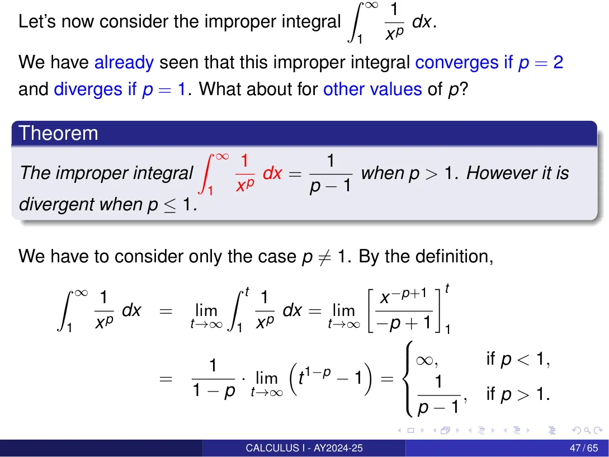
We saw that $\int_1^\infty\frac{dx}{x^p}$ converges for $p=2$ and diverges for $p=1$. Theorem: it equals $\frac1{p-1}$ when $p>1$ and diverges when $p\le1$. Proof: the case $p=1$ is done; for $p\ne1$, $\int_1^t x^{-p}dx=\frac{t^{1-p}-1}{1-p}$. If $p>1$ the exponent $1-p$ is negative, $t^{1-p}\to0$ and the limit is $\frac1{p-1}$; if $p<1$, $t^{1-p}\to\infty$. The theorem is the benchmark for every comparison below.
Ta đã thấy $\int_1^\infty\frac{dx}{x^p}$ hội tụ khi $p=2$ và phân kỳ khi $p=1$. Định lý: nó bằng $\frac1{p-1}$ khi $p>1$ và phân kỳ khi $p\le1$. Chứng minh: trường hợp $p=1$ đã xong; với $p\ne1$, $\int_1^t x^{-p}dx=\frac{t^{1-p}-1}{1-p}$. Nếu $p>1$ thì số mũ $1-p$ âm, $t^{1-p}\to0$ và giới hạn là $\frac1{p-1}$; nếu $p<1$ thì $t^{1-p}\to\infty$. Định lý là chuẩn so sánh cho mọi bài dưới đây.
The $p$-integral is the yardstick: nearly every convergence question is settled by comparing with $\frac1{x^p}$.
Tích phân $p$ là thước đo: hầu như mọi câu hỏi về hội tụ đều được giải quyết bằng cách so sánh với $\frac1{x^p}$.
Decide whether $\displaystyle\int_1^\infty x^{-4/3}dx$ and $\displaystyle\int_1^\infty x^{-2/3}dx$ converge, and evaluate $\displaystyle\int_2^\infty x^{-4}dx$.
Xác định $\displaystyle\int_1^\infty x^{-4/3}dx$ và $\displaystyle\int_1^\infty x^{-2/3}dx$ có hội tụ không, và tính $\displaystyle\int_2^\infty x^{-4}dx$.
Answer and solution · Đáp án và lời giải
Answer · Đáp án: $3$ (converges), diverges, and $\dfrac1{24}$
$p=\frac43>1$: converges to $\frac1{p-1}=3$. $p=\frac23\le1$: diverges. Third: $\left[-\frac1{3x^3}\right]_2^\infty=\frac1{24}$ (in general $\int_a^\infty x^{-p}dx=\frac{a^{1-p}}{p-1}$).
$p=\frac43>1$: hội tụ về $\frac1{p-1}=3$. $p=\frac23\le1$: phân kỳ. Bài thứ ba: $\left[-\frac1{3x^3}\right]_2^\infty=\frac1{24}$ (tổng quát $\int_a^\infty x^{-p}dx=\frac{a^{1-p}}{p-1}$).
Type II: a vertical asymptote · Loại II: tiệm cận đứng
★★★ Core · Cốt lõi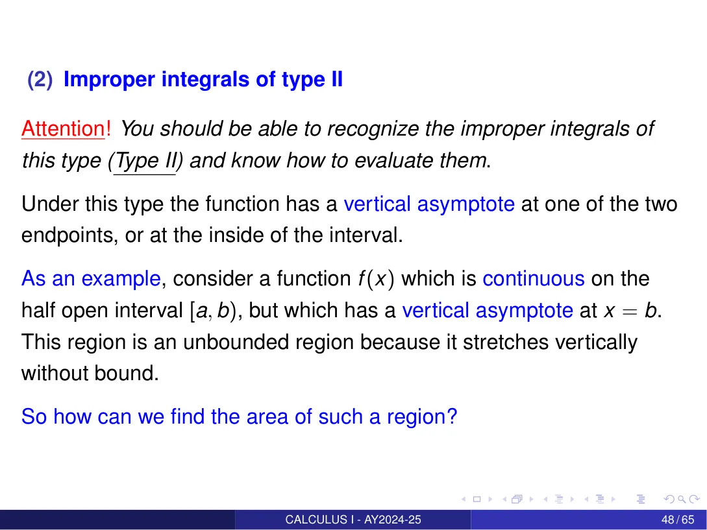
Attention: you must recognise Type II integrals and know how to evaluate them. In Type II the function has a vertical asymptote at an endpoint or inside the interval. Example: $f$ continuous on $[a,b)$ with a vertical asymptote at $x=b$; the region stretches upward without bound. How do we find its area?
Chú ý: bạn phải nhận ra tích phân loại II và biết cách tính chúng. Ở loại II hàm có tiệm cận đứng tại một đầu mút hoặc bên trong khoảng. Ví dụ: $f$ liên tục trên $[a,b)$ với tiệm cận đứng tại $x=b$; miền kéo dài lên trên không giới hạn. Làm sao tìm diện tích của nó?
Which of $\displaystyle\int_0^1\frac{dx}{\sqrt x}$, $\displaystyle\int_0^{\pi/2}\tan x\,dx$, $\displaystyle\int_1^2\frac{dx}{x-1}$, $\displaystyle\int_0^1\frac{\sin x}x\,dx$ are improper of Type II?
Tích phân nào trong $\displaystyle\int_0^1\frac{dx}{\sqrt x}$, $\displaystyle\int_0^{\pi/2}\tan x\,dx$, $\displaystyle\int_1^2\frac{dx}{x-1}$, $\displaystyle\int_0^1\frac{\sin x}x\,dx$ là suy rộng loại II?
Answer and solution · Đáp án và lời giải
Answer · Đáp án: the first three; the fourth is an ordinary integral
The integrands blow up at $x=0$, $x=\frac\pi2$ and $x=1$ respectively. For $\frac{\sin x}x$ the limit as $x\to0$ is $1$, a removable singularity, not a vertical asymptote: define the value $1$ at $0$ and it is an ordinary continuous integrand.
Các hàm tiến ra vô cực lần lượt tại $x=0$, $x=\frac\pi2$ và $x=1$. Với $\frac{\sin x}x$ giới hạn khi $x\to0$ là $1$, một điểm kỳ dị khử được, không phải tiệm cận đứng: gán giá trị $1$ tại $0$ thì nó là hàm liên tục thông thường.
Defining the area as a limit · Định nghĩa diện tích bằng giới hạn
★★ Important · Quan trọng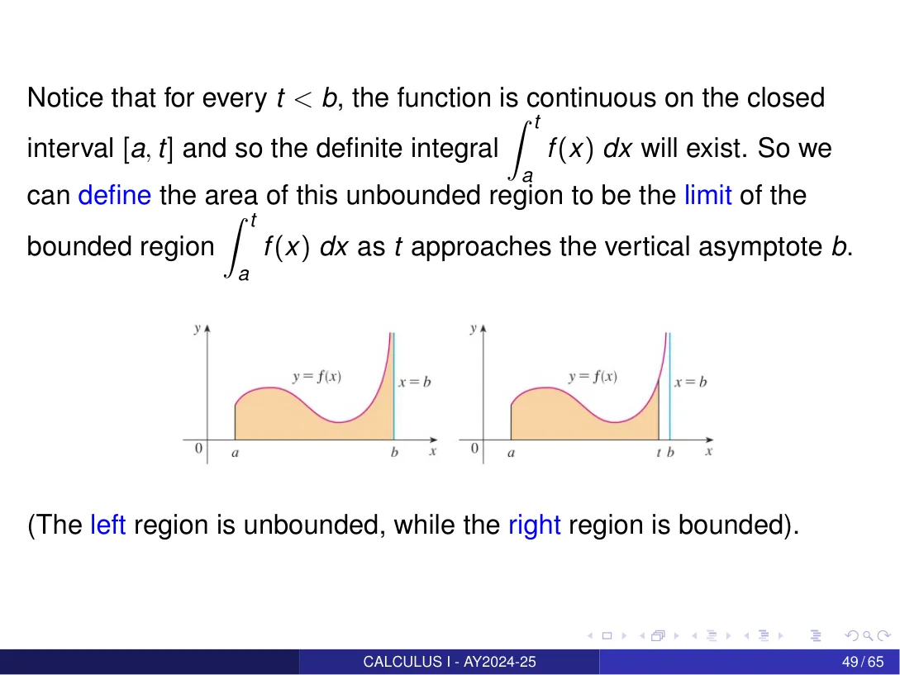
For every $t<b$ the function is continuous on the closed interval $[a,t]$, so $\int_a^tf(x)\,dx$ exists. Define the area of the unbounded region as the limit of the bounded areas $\int_a^tf$ as $t$ approaches the asymptote $b$. In the figure the left region is unbounded, the right one is bounded.
Với mọi $t<b$ hàm liên tục trên đoạn đóng $[a,t]$, nên $\int_a^tf(x)\,dx$ tồn tại. Định nghĩa diện tích của miền không bị chặn là giới hạn của các diện tích bị chặn $\int_a^tf$ khi $t$ tiến đến tiệm cận $b$. Trên hình, miền bên trái không bị chặn, miền bên phải bị chặn.
Type II: definitions (a) and (b) · Loại II: định nghĩa (a) và (b)
★★★ Core · Cốt lõi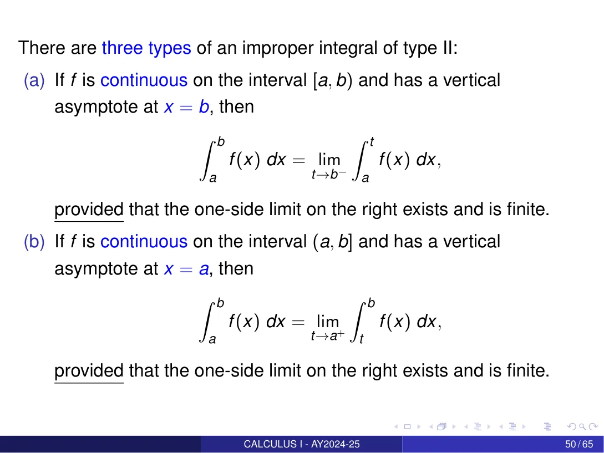
(a) If $f$ is continuous on $[a,b)$ with a vertical asymptote at $x=b$: $\int_a^bf(x)dx=\lim_{t\to b^-}\int_a^tf(x)dx$. (b) If $f$ is continuous on $(a,b]$ with a vertical asymptote at $x=a$: $\int_a^bf(x)dx=\lim_{t\to a^+}\int_t^bf(x)dx$. In both cases the one-sided limit must exist and be finite. Note the side: $t$ approaches the bad endpoint from inside the interval.
(a) Nếu $f$ liên tục trên $[a,b)$ với tiệm cận đứng tại $x=b$: $\int_a^bf(x)dx=\lim_{t\to b^-}\int_a^tf(x)dx$. (b) Nếu $f$ liên tục trên $(a,b]$ với tiệm cận đứng tại $x=a$: $\int_a^bf(x)dx=\lim_{t\to a^+}\int_t^bf(x)dx$. Cả hai trường hợp giới hạn một phía phải tồn tại và hữu hạn. Lưu ý phía: $t$ tiến đến đầu mút xấu từ bên trong khoảng.
Evaluate $\displaystyle\int_0^1\frac{dx}{\sqrt x}$ and $\displaystyle\int_0^1\ln x\,dx$; then decide $\displaystyle\int_0^1\frac{dx}x$ and $\displaystyle\int_0^1x^{-1/3}dx$.
Tính $\displaystyle\int_0^1\frac{dx}{\sqrt x}$ và $\displaystyle\int_0^1\ln x\,dx$; rồi xác định $\displaystyle\int_0^1\frac{dx}x$ và $\displaystyle\int_0^1x^{-1/3}dx$.
Answer and solution · Đáp án và lời giải
Answer · Đáp án: $2$, $-1$, divergent, and $\dfrac32$
First: $\lim_{t\to0^+}[2\sqrt x]_t^1=2$. Second: $\int\ln x\,dx=x\ln x-x$, so $\lim_{t\to0^+}\left[(-1)-(t\ln t-t)\right]=-1$ because $t\ln t\to0$. Third: $\lim_{t\to0^+}(-\ln t)=\infty$, divergent. Fourth: $\left[\frac32x^{2/3}\right]_0^1=\frac32$. (The Type II $p$-test: $\int_0^1x^{-p}dx$ converges exactly when $p<1$, to $\frac1{1-p}$.)
Bài 1: $\lim_{t\to0^+}[2\sqrt x]_t^1=2$. Bài 2: $\int\ln x\,dx=x\ln x-x$, nên $\lim_{t\to0^+}\left[(-1)-(t\ln t-t)\right]=-1$ vì $t\ln t\to0$. Bài 3: $\lim_{t\to0^+}(-\ln t)=\infty$, phân kỳ. Bài 4: $\left[\frac32x^{2/3}\right]_0^1=\frac32$. (Tiêu chuẩn $p$ loại II: $\int_0^1x^{-p}dx$ hội tụ khi và chỉ khi $p<1$, về $\frac1{1-p}$.)
Type II: definition (c), asymptote inside · Loại II: định nghĩa (c), tiệm cận bên trong
★★★ Core · Cốt lõi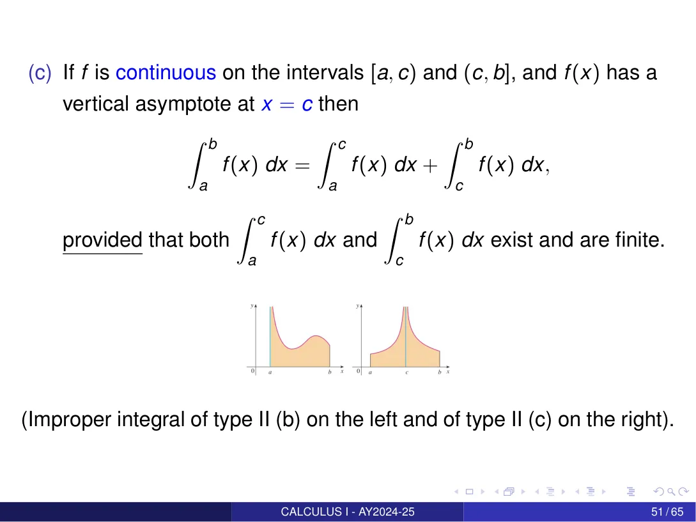
(c) If $f$ is continuous on $[a,c)$ and $(c,b]$ with a vertical asymptote at $x=c$ inside: $\int_a^bf=\int_a^cf+\int_c^bf$, provided both converge. The left piece is a Type II (a) integral and the right piece a Type II (b) integral.
(c) Nếu $f$ liên tục trên $[a,c)$ và $(c,b]$ với tiệm cận đứng tại $x=c$ nằm bên trong: $\int_a^bf=\int_a^cf+\int_c^bf$, với điều kiện cả hai hội tụ. Phần trái là tích phân loại II (a) và phần phải là tích phân loại II (b).
Evaluate $\displaystyle\int_0^3\frac{dx}{(x-1)^{2/3}}$ (the sixth integral of slide 31 in the previous lecture).
Tính $\displaystyle\int_0^3\frac{dx}{(x-1)^{2/3}}$ (tích phân thứ sáu ở slide 31 của bài trước).
Answer and solution · Đáp án và lời giải
Answer · Đáp án: $3+3\sqrt[3]2$
The asymptote is $x=1$, inside $(0,3)$. An antiderivative is $3(x-1)^{1/3}$ (real cube root, defined for negative values). $\int_0^1=3\cdot0-3(-1)=3$ and $\int_1^3=3\sqrt[3]2-0$. Both finite, so the total is $3+3\sqrt[3]2\approx6.78$.
Tiệm cận là $x=1$, nằm trong $(0,3)$. Một nguyên hàm là $3(x-1)^{1/3}$ (căn bậc ba thực, xác định cả với số âm). $\int_0^1=3\cdot0-3(-1)=3$ và $\int_1^3=3\sqrt[3]2-0$. Cả hai hữu hạn nên tổng là $3+3\sqrt[3]2\approx6.78$.
Remarks 1 and 2: convergence and splitting · Nhận xét 1 và 2: hội tụ và tách
★★★ Core · Cốt lõi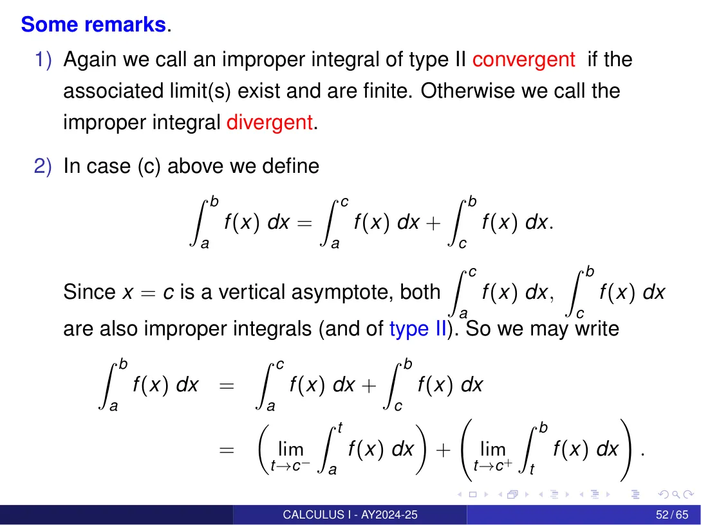
(1) A Type II integral converges if the associated limit(s) exist and are finite; otherwise it diverges. (2) In case (c) the two halves are themselves Type II integrals, so $\int_a^bf=\lim_{t\to c^-}\int_a^tf+\lim_{t\to c^+}\int_t^bf$ with two independent limits, one from each side of $c$.
(1) Tích phân loại II hội tụ nếu các giới hạn liên quan tồn tại và hữu hạn; nếu không thì phân kỳ. (2) Ở trường hợp (c) hai nửa tự chúng là tích phân loại II, nên $\int_a^bf=\lim_{t\to c^-}\int_a^tf+\lim_{t\to c^+}\int_t^bf$ với hai giới hạn độc lập, mỗi phía của $c$ một giới hạn.
Remarks 2 (end) and 3: several asymptotes · Nhận xét 2 (tiếp) và 3: nhiều tiệm cận
★★★ Core · Cốt lõi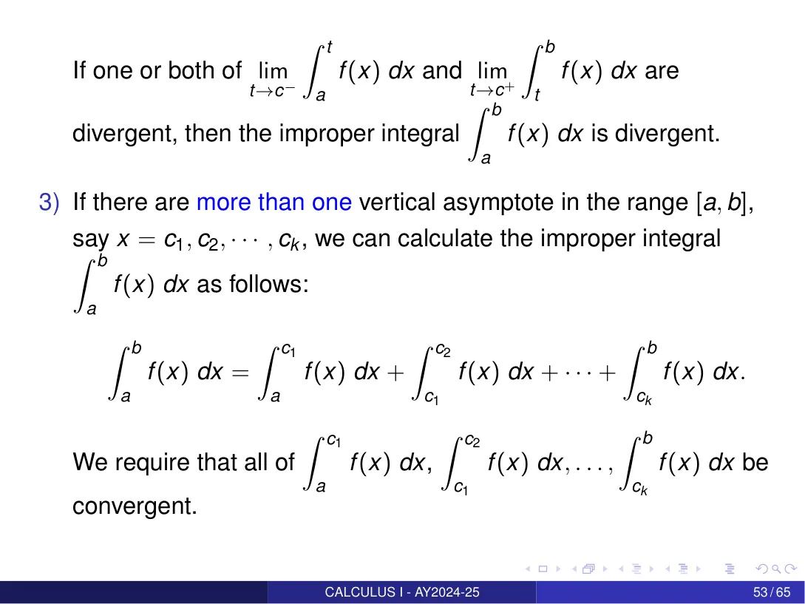
If one or both of the one-sided limits diverge, the whole integral diverges. (3) If there are several vertical asymptotes $c_1,\dots,c_k$ in $[a,b]$, split at every one: $\int_a^b=\int_a^{c_1}+\int_{c_1}^{c_2}+\cdots+\int_{c_k}^b$, and all the pieces must converge.
Nếu một hoặc cả hai giới hạn một phía phân kỳ thì cả tích phân phân kỳ. (3) Nếu có nhiều tiệm cận đứng $c_1,\dots,c_k$ trong $[a,b]$, tách tại từng tiệm cận: $\int_a^b=\int_a^{c_1}+\int_{c_1}^{c_2}+\cdots+\int_{c_k}^b$, và mọi phần đều phải hội tụ.
Evaluate $\displaystyle\int_0^3\left(\frac1{\sqrt{|x-1|}}+\frac1{\sqrt{|x-2|}}\right)dx$: list the asymptotes and split.
Tính $\displaystyle\int_0^3\left(\frac1{\sqrt{|x-1|}}+\frac1{\sqrt{|x-2|}}\right)dx$: liệt kê các tiệm cận và tách.
Answer and solution · Đáp án và lời giải
Answer · Đáp án: $4+4\sqrt2$
Asymptotes at $x=1$ and $x=2$: pieces $[0,1],[1,2],[2,3]$, all convergent. $\int_0^3\frac{dx}{\sqrt{|x-1|}}=\int_0^1\frac{dx}{\sqrt{1-x}}+\int_1^3\frac{dx}{\sqrt{x-1}}=2+2\sqrt2$. Likewise $\int_0^3\frac{dx}{\sqrt{|x-2|}}=2\sqrt2+2$. Total $4+4\sqrt2\approx9.657$.
Tiệm cận tại $x=1$ và $x=2$: các đoạn $[0,1],[1,2],[2,3]$, tất cả hội tụ. $\int_0^3\frac{dx}{\sqrt{|x-1|}}=\int_0^1\frac{dx}{\sqrt{1-x}}+\int_1^3\frac{dx}{\sqrt{x-1}}=2+2\sqrt2$. Tương tự $\int_0^3\frac{dx}{\sqrt{|x-2|}}=2\sqrt2+2$. Tổng $4+4\sqrt2\approx9.657$.
Remark 4: always look for vertical asymptotes first · Nhận xét 4: luôn tìm tiệm cận đứng trước
★★★ Core · Cốt lõi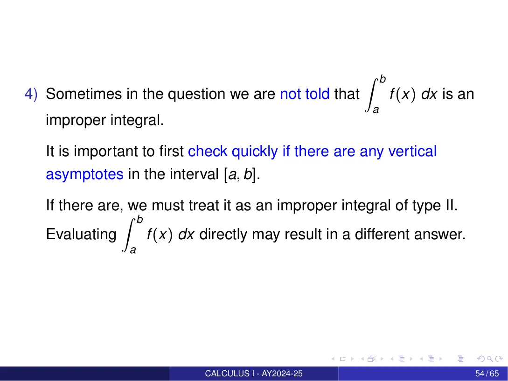
Often the question does not say that the integral is improper. Check quickly for vertical asymptotes in $[a,b]$; if there are any, you must treat it as Type II. Evaluating directly with the Fundamental Theorem may give a different (wrong) answer.
Nhiều khi đề bài không nói tích phân là suy rộng. Kiểm tra nhanh tiệm cận đứng trong $[a,b]$; nếu có, bạn phải xử lý như loại II. Tính trực tiếp bằng Định lý cơ bản có thể cho đáp số khác (sai).
A classic trap: $\int_{-1}^1\frac{dx}{x^2}$ looks routine and a positive function seems to get a negative area.
Bẫy kinh điển: $\int_{-1}^1\frac{dx}{x^2}$ trông bình thường mà hàm dương lại cho diện tích âm.
A student computes $\displaystyle\int_{-1}^1\frac{dx}{x^2}=\left[-\frac1x\right]_{-1}^{1}=-2$. Find the error and give the correct answer.
Một bạn tính $\displaystyle\int_{-1}^1\frac{dx}{x^2}=\left[-\frac1x\right]_{-1}^{1}=-2$. Tìm lỗi và cho đáp số đúng.
Answer and solution · Đáp án và lời giải
Answer · Đáp án: the integral diverges (it is $+\infty$)
The integrand is positive, so a negative value is impossible. It has a vertical asymptote at $x=0$ inside $[-1,1]$, so the Fundamental Theorem does not apply across $0$. Splitting: $\int_0^1\frac{dx}{x^2}=\lim_{t\to0^+}\left(\frac1t-1\right)=\infty$, so the integral diverges.
Hàm dưới dấu tích phân dương nên giá trị âm là không thể. Nó có tiệm cận đứng tại $x=0$ nằm trong $[-1,1]$ nên Định lý cơ bản không áp dụng qua $0$. Tách ra: $\int_0^1\frac{dx}{x^2}=\lim_{t\to0^+}\left(\frac1t-1\right)=\infty$, nên tích phân phân kỳ.
Example: $\int_0^2\frac{dx}{\sqrt{2-x}}$ · Ví dụ: $\int_0^2\frac{dx}{\sqrt{2-x}}$
★★★ Core · Cốt lõi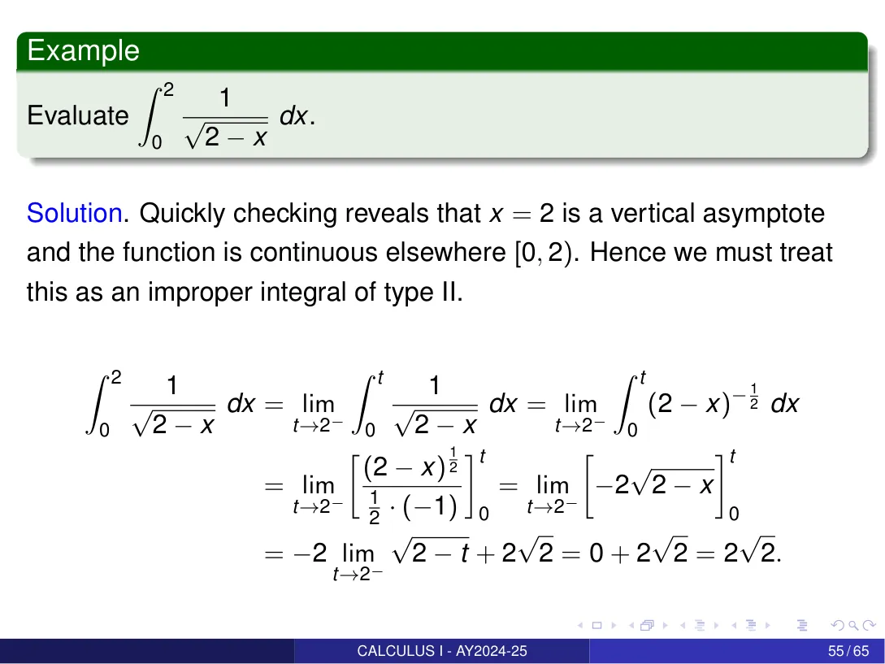
A quick check shows $x=2$ is a vertical asymptote and the function is continuous on $[0,2)$: Type II. $$\begin{aligned}\int_0^2\frac{dx}{\sqrt{2-x}}&=\lim_{t\to2^-}\int_0^t(2-x)^{-1/2}dx=\lim_{t\to2^-}\left[-2\sqrt{2-x}\right]_0^t\\&=\lim_{t\to2^-}\left(-2\sqrt{2-t}+2\sqrt2\right)=2\sqrt2.\end{aligned}$$ Write the limit explicitly at every stage until you substitute.
Kiểm tra nhanh cho thấy $x=2$ là tiệm cận đứng và hàm liên tục trên $[0,2)$: loại II. $$\begin{aligned}\int_0^2\frac{dx}{\sqrt{2-x}}&=\lim_{t\to2^-}\int_0^t(2-x)^{-1/2}dx=\lim_{t\to2^-}\left[-2\sqrt{2-x}\right]_0^t\\&=\lim_{t\to2^-}\left(-2\sqrt{2-t}+2\sqrt2\right)=2\sqrt2.\end{aligned}$$ Hãy viết giới hạn rõ ràng ở mọi bước cho đến khi thay giá trị.
Evaluate $\displaystyle\int_0^3\frac{dx}{\sqrt{9-x^2}}$ and decide $\displaystyle\int_1^2\frac{dx}{x-1}$.
Tính $\displaystyle\int_0^3\frac{dx}{\sqrt{9-x^2}}$ và xác định $\displaystyle\int_1^2\frac{dx}{x-1}$.
Answer and solution · Đáp án và lời giải
Answer · Đáp án: $\dfrac\pi2$, and the second diverges
First: asymptote at $x=3$; $\lim_{t\to3^-}\sin^{-1}\frac t3=\sin^{-1}1=\frac\pi2$ (a quarter of the arc length of a unit circle, a finite value). Second: asymptote at $x=1$, $\lim_{t\to1^+}\left[\ln(x-1)\right]_t^2=-\lim\ln(t-1)=\infty$: diverges.
Bài đầu: tiệm cận tại $x=3$; $\lim_{t\to3^-}\sin^{-1}\frac t3=\sin^{-1}1=\frac\pi2$ (giá trị hữu hạn). Bài sau: tiệm cận tại $x=1$, $\lim_{t\to1^+}\left[\ln(x-1)\right]_t^2=-\lim\ln(t-1)=\infty$: phân kỳ.
The picture: finite area $2\sqrt2$ · Hình minh họa: diện tích hữu hạn $2\sqrt2$
★★ Important · Quan trọng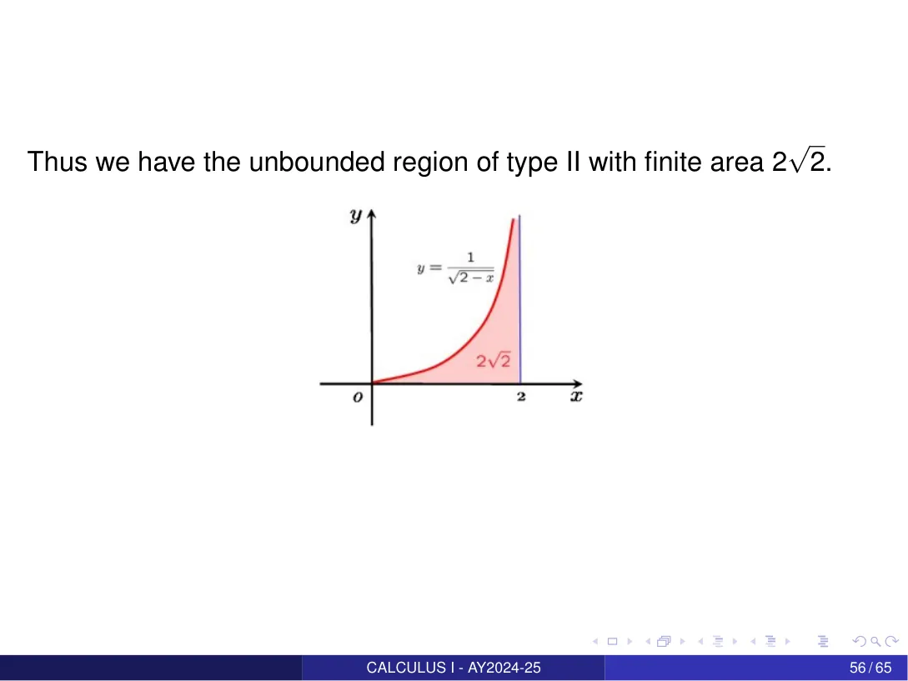
The slide shows the unbounded region under $y=\frac1{\sqrt{2-x}}$ on $[0,2)$: it stretches up without bound near $x=2$, yet its area is the finite number $2\sqrt2$. As for Type I, unbounded does not mean infinite area.
Slide cho thấy miền không bị chặn dưới $y=\frac1{\sqrt{2-x}}$ trên $[0,2)$: nó kéo dài lên không giới hạn gần $x=2$, nhưng diện tích là số hữu hạn $2\sqrt2$. Như loại I, không bị chặn không có nghĩa là diện tích vô hạn.
The comparison theorem: motivation · Định lý so sánh: động cơ
★★★ Core · Cốt lõi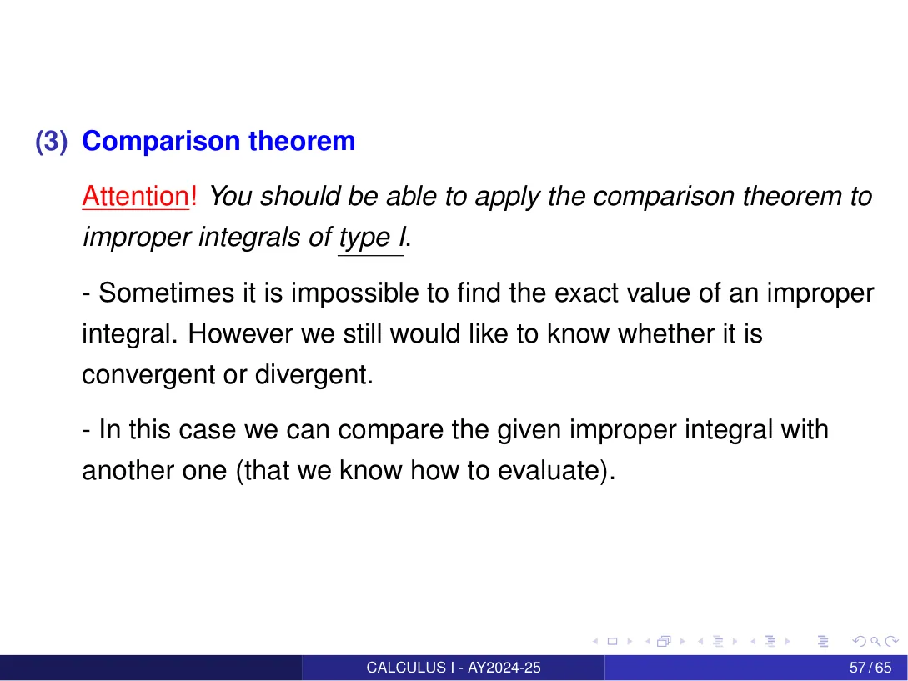
Attention: you should be able to apply the comparison theorem to improper integrals of Type I. Sometimes the exact value is impossible to find, but we still want to know whether the integral converges or diverges. Then we compare it with another improper integral we know how to evaluate.
Chú ý: bạn phải biết áp dụng định lý so sánh cho tích phân suy rộng loại I. Đôi khi không thể tìm giá trị chính xác nhưng ta vẫn muốn biết tích phân hội tụ hay phân kỳ. Khi đó ta so sánh nó với một tích phân suy rộng khác mà ta biết tính.
The comparison theorem (Type I) · Định lý so sánh (loại I)
★★★ Core · Cốt lõi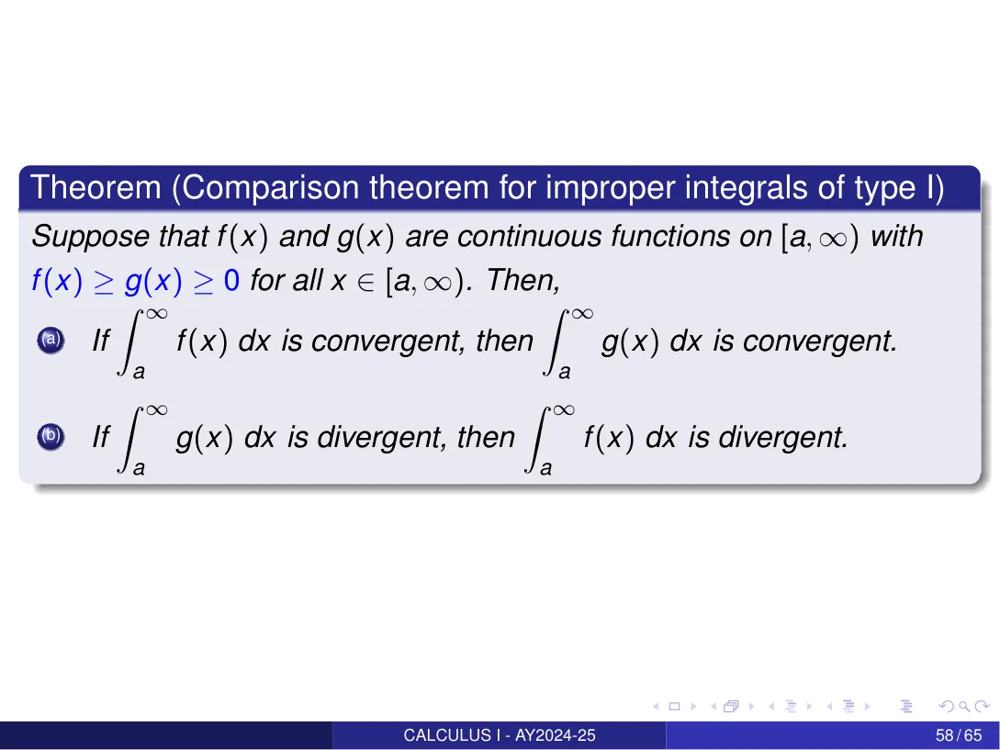
Theorem. If $f,g$ are continuous on $[a,\infty)$ and $f(x)\ge g(x)\ge0$ for all $x\ge a$, then (a) $\int_a^\infty f$ convergent $\Rightarrow$ $\int_a^\infty g$ convergent; (b) $\int_a^\infty g$ divergent $\Rightarrow$ $\int_a^\infty f$ divergent. In words: the smaller integral of a convergent one converges; the bigger integral of a divergent one diverges.
Định lý. Nếu $f,g$ liên tục trên $[a,\infty)$ và $f(x)\ge g(x)\ge0$ với mọi $x\ge a$ thì (a) $\int_a^\infty f$ hội tụ $\Rightarrow$ $\int_a^\infty g$ hội tụ; (b) $\int_a^\infty g$ phân kỳ $\Rightarrow$ $\int_a^\infty f$ phân kỳ. Nói bằng lời: tích phân nhỏ hơn của một tích phân hội tụ thì hội tụ; tích phân lớn hơn của một tích phân phân kỳ thì phân kỳ.
Show that $\displaystyle\int_1^\infty e^{-x^2}dx$ converges and that $\displaystyle\int_2^\infty\frac{dx}{\sqrt x-1}$ diverges, using comparison.
Chứng tỏ $\displaystyle\int_1^\infty e^{-x^2}dx$ hội tụ và $\displaystyle\int_2^\infty\frac{dx}{\sqrt x-1}$ phân kỳ bằng so sánh.
Answer and solution · Đáp án và lời giải
Answer · Đáp án: convergent, and divergent
For $x\ge1$, $x^2\ge x$ so $0<e^{-x^2}\le e^{-x}$, and $\int_1^\infty e^{-x}dx=e^{-1}$ converges: the smaller integral converges. For $x\ge2$, $\sqrt x-1<\sqrt x$ so $\frac1{\sqrt x-1}>\frac1{\sqrt x}>0$, and $\int_2^\infty x^{-1/2}dx$ diverges ($p=\frac12\le1$): the bigger integral diverges.
Với $x\ge1$, $x^2\ge x$ nên $0<e^{-x^2}\le e^{-x}$, và $\int_1^\infty e^{-x}dx=e^{-1}$ hội tụ: tích phân nhỏ hơn hội tụ. Với $x\ge2$, $\sqrt x-1<\sqrt x$ nên $\frac1{\sqrt x-1}>\frac1{\sqrt x}>0$, và $\int_2^\infty x^{-1/2}dx$ phân kỳ ($p=\frac12\le1$): tích phân lớn hơn phân kỳ.
Comments (a)–(c): conditions and converses · Chú ý (a)–(c): điều kiện và mệnh đề đảo
★★★ Core · Cốt lõi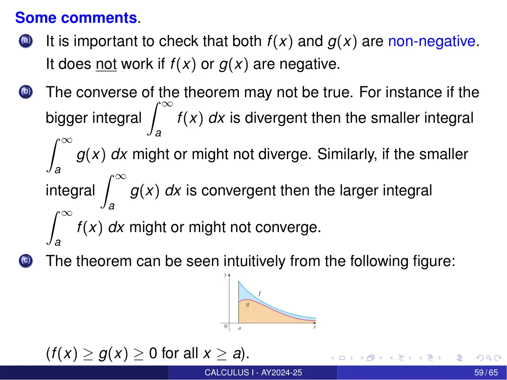
(a) Both functions must be non-negative; the theorem fails for negative values. (b) The converse is false: if the bigger integral $\int f$ diverges, the smaller $\int g$ may or may not diverge; if the smaller one converges, the bigger may or may not converge. (c) The theorem is visible in the figure: the graph of $f$ lies above the graph of $g\ge0$ on $[a,\infty)$, so the area under $g$ is at most the area under $f$.
(a) Cả hai hàm phải không âm; định lý sai với giá trị âm. (b) Mệnh đề đảo sai: nếu tích phân lớn hơn $\int f$ phân kỳ thì tích phân nhỏ hơn $\int g$ có thể phân kỳ hoặc không; nếu tích phân nhỏ hơn hội tụ thì tích phân lớn hơn có thể hội tụ hoặc không. (c) Định lý thấy rõ trên hình: đồ thị của $f$ nằm trên đồ thị của $g\ge0$ trên $[a,\infty)$, nên diện tích dưới $g$ không vượt quá diện tích dưới $f$.
Give examples with $f\ge g\ge0$ on $[1,\infty)$ showing that (i) $\int f$ diverges while $\int g$ converges, and (ii) both diverge.
Cho ví dụ với $f\ge g\ge0$ trên $[1,\infty)$ chứng tỏ (i) $\int f$ phân kỳ còn $\int g$ hội tụ, và (ii) cả hai phân kỳ.
Answer and solution · Đáp án và lời giải
Answer · Đáp án: (i) $f=\frac1x$, $g=\frac1{x^2}$; (ii) $f=\frac2x$, $g=\frac1x$
(i) $\int_1^\infty\frac{dx}x=\infty$ but $\int_1^\infty\frac{dx}{x^2}=1$. (ii) $\int_1^\infty\frac{dx}x$ and $\int_1^\infty\frac{2\,dx}x$ both diverge. So a divergent bigger integral says nothing about the smaller one.
(i) $\int_1^\infty\frac{dx}x=\infty$ nhưng $\int_1^\infty\frac{dx}{x^2}=1$. (ii) $\int_1^\infty\frac{dx}x$ và $\int_1^\infty\frac{2\,dx}x$ đều phân kỳ. Vậy tích phân lớn hơn phân kỳ không cho biết gì về tích phân nhỏ hơn.
Comment (d): comparison gives no value · Chú ý (d): so sánh không cho giá trị
★★★ Core · Cốt lõi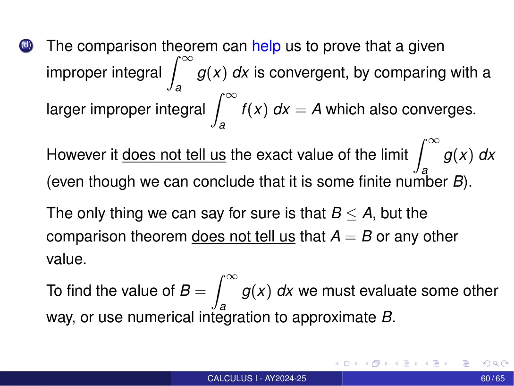
The theorem can prove that $\int_a^\infty g$ is convergent by comparing with a larger convergent integral $\int_a^\infty f=A$, but it does not give the value $B=\int_a^\infty g$. We only know $0\le B\le A$; to find $B$ evaluate some other way or approximate numerically.
Định lý có thể chứng minh $\int_a^\infty g$ hội tụ bằng cách so sánh với tích phân hội tụ lớn hơn $\int_a^\infty f=A$, nhưng không cho giá trị $B=\int_a^\infty g$. Ta chỉ biết $0\le B\le A$; để tìm $B$ phải tính bằng cách khác hoặc xấp xỉ bằng số.
With $B=\int_1^\infty e^{-x^2}dx$ and the bound $A=\int_1^\infty e^{-x}dx$ from slide 12, state what comparison tells us about $B$ and compute $B$ numerically.
Với $B=\int_1^\infty e^{-x^2}dx$ và cận $A=\int_1^\infty e^{-x}dx$ ở slide 12, nêu so sánh cho biết gì về $B$ và tính $B$ bằng số.
Answer and solution · Đáp án và lời giải
Answer · Đáp án: $0<B\le e^{-1}\approx0.368$; in fact $B\approx0.1394$
Comparison only gives $0<B\le A=e^{-1}\approx0.3679$. The actual value is $B=\frac{\sqrt\pi}2\operatorname{erfc}(1)\approx0.1394$, found numerically (there is no elementary antiderivative of $e^{-x^2}$): much smaller than the bound.
So sánh chỉ cho $0<B\le A=e^{-1}\approx0.3679$. Giá trị thực là $B=\frac{\sqrt\pi}2\operatorname{erfc}(1)\approx0.1394$, tìm bằng số (không có nguyên hàm sơ cấp của $e^{-x^2}$): nhỏ hơn nhiều so với cận.
Example: $\int_1^\infty\frac{1+e^{-x}}x\,dx$ · Ví dụ: $\int_1^\infty\frac{1+e^{-x}}x\,dx$
★★★ Core · Cốt lõi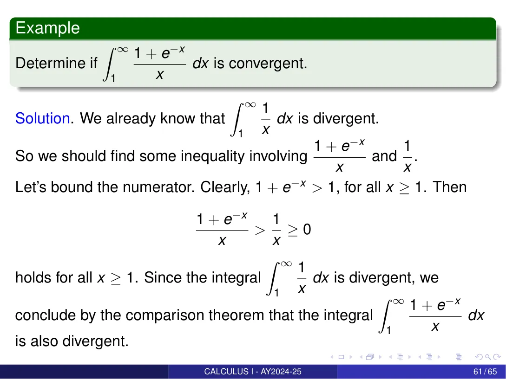
We know $\int_1^\infty\frac{dx}x$ diverges, so look for an inequality between $\frac{1+e^{-x}}x$ and $\frac1x$. Bound the numerator: $1+e^{-x}>1$ for all $x\ge1$, hence $\frac{1+e^{-x}}x>\frac1x\ge0$. Since the smaller integral diverges, the bigger one diverges by the comparison theorem. Pattern: guess the behaviour for large $x$ (here the $e^{-x}$ is negligible, so the integrand behaves like $\frac1x$), then prove it with an inequality in the right direction.
Ta biết $\int_1^\infty\frac{dx}x$ phân kỳ, nên tìm bất đẳng thức giữa $\frac{1+e^{-x}}x$ và $\frac1x$. Chặn tử số: $1+e^{-x}>1$ với mọi $x\ge1$, do đó $\frac{1+e^{-x}}x>\frac1x\ge0$. Vì tích phân nhỏ hơn phân kỳ nên tích phân lớn hơn phân kỳ theo định lý so sánh. Mô thức: đoán cách hàm xử sự khi $x$ lớn (ở đây $e^{-x}$ không đáng kể nên hàm giống $\frac1x$), rồi chứng minh bằng bất đẳng thức đúng chiều.
This is the model answer for comparison questions: state the comparison function, the inequality (with the range of $x$), the known behaviour, and the conclusion.
Đây là bài giải mẫu cho câu hỏi so sánh: nêu hàm so sánh, bất đẳng thức (kèm miền của $x$), hành vi đã biết, và kết luận.
Decide whether $\displaystyle\int_1^\infty\frac{2+\sin x}x\,dx$ and $\displaystyle\int_1^\infty\frac{\cos^2x}{x^2}dx$ converge.
Xác định $\displaystyle\int_1^\infty\frac{2+\sin x}x\,dx$ và $\displaystyle\int_1^\infty\frac{\cos^2x}{x^2}dx$ có hội tụ không.
Answer and solution · Đáp án và lời giải
Answer · Đáp án: the first diverges, the second converges
First: $2+\sin x\ge1$, so $\frac{2+\sin x}x\ge\frac1x\ge0$ and $\int_1^\infty\frac{dx}x$ diverges: diverges. Second: $0\le\frac{\cos^2x}{x^2}\le\frac1{x^2}$ and $\int_1^\infty\frac{dx}{x^2}=1$: converges.
Bài đầu: $2+\sin x\ge1$ nên $\frac{2+\sin x}x\ge\frac1x\ge0$ và $\int_1^\infty\frac{dx}x$ phân kỳ: phân kỳ. Bài sau: $0\le\frac{\cos^2x}{x^2}\le\frac1{x^2}$ và $\int_1^\infty\frac{dx}{x^2}=1$: hội tụ.
The monotonic function theorem: definitions · Định lý hàm đơn điệu: định nghĩa
★★ Important · Quan trọng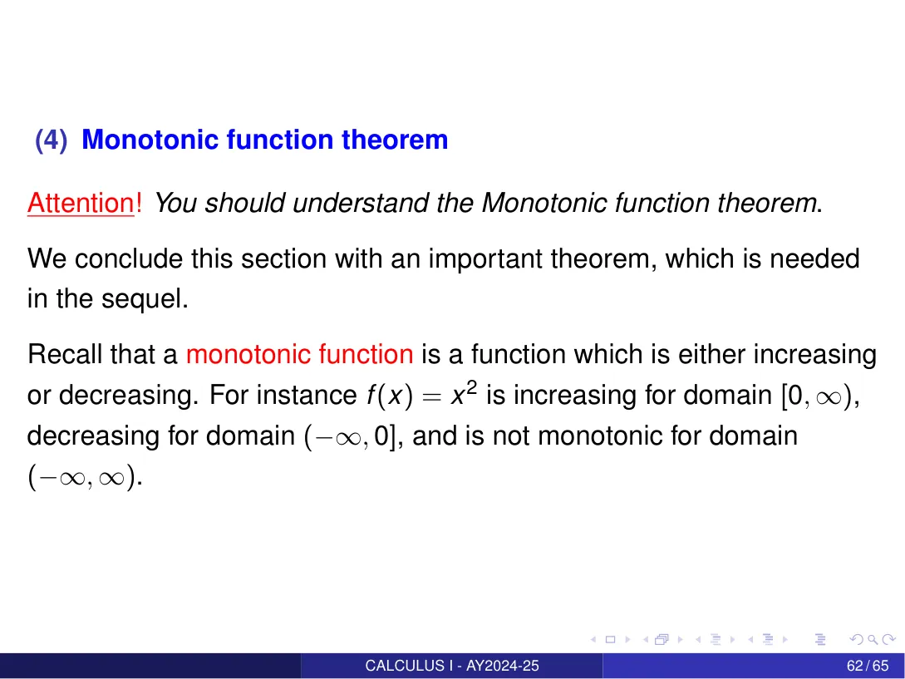
Attention: understand the Monotonic function theorem; it is needed in the sequel. A monotonic function is either increasing or decreasing. For example $f(x)=x^2$ is increasing on $[0,\infty)$, decreasing on $(-\infty,0]$ and not monotonic on $(-\infty,\infty)$.
Chú ý: hãy hiểu Định lý hàm đơn điệu; nó cần cho phần sau. Hàm đơn điệu là hàm tăng hoặc giảm. Ví dụ $f(x)=x^2$ tăng trên $[0,\infty)$, giảm trên $(-\infty,0]$ và không đơn điệu trên $(-\infty,\infty)$.
Bounded functions and the theorem · Hàm bị chặn và định lý
★★★ Core · Cốt lõi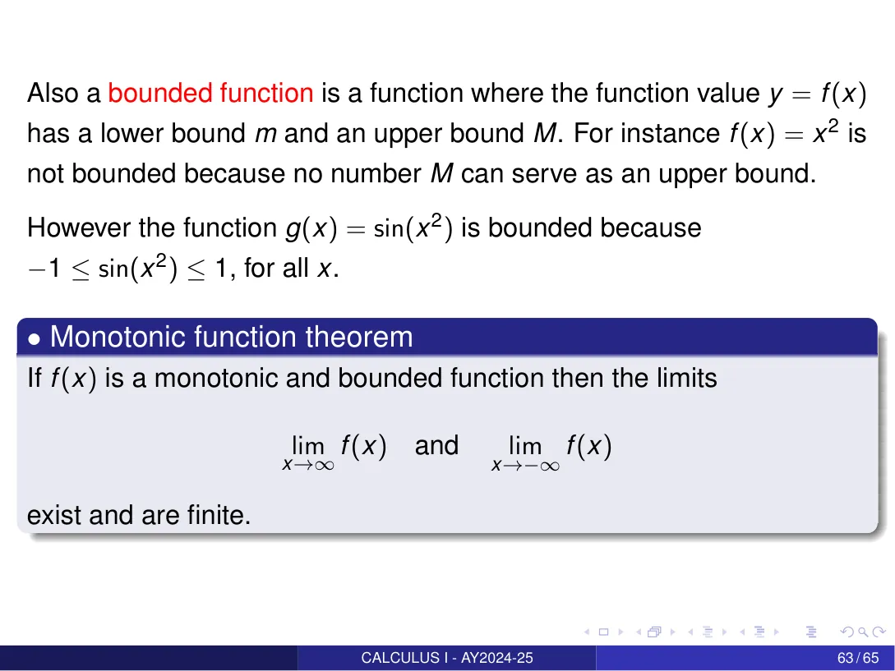
A function is bounded if there are numbers $m\le f(x)\le M$ for all $x$. $x^2$ is not bounded (no upper bound) but $\sin(x^2)$ is, since $-1\le\sin(x^2)\le1$. Monotonic function theorem: if $f$ is monotonic and bounded, then $\lim_{x\to\infty}f(x)$ and $\lim_{x\to-\infty}f(x)$ exist and are finite. Both hypotheses are needed: $\ln x$ is monotonic but unbounded (limit $\infty$); $\sin x$ is bounded but not monotonic (no limit).
Một hàm bị chặn nếu tồn tại các số $m\le f(x)\le M$ với mọi $x$. $x^2$ không bị chặn (không có cận trên) nhưng $\sin(x^2)$ bị chặn vì $-1\le\sin(x^2)\le1$. Định lý hàm đơn điệu: nếu $f$ đơn điệu và bị chặn thì $\lim_{x\to\infty}f(x)$ và $\lim_{x\to-\infty}f(x)$ tồn tại và hữu hạn. Cần cả hai giả thiết: $\ln x$ đơn điệu nhưng không bị chặn (giới hạn $\infty$); $\sin x$ bị chặn nhưng không đơn điệu (không có giới hạn).
This theorem is the reason a bounded increasing sequence converges, the basic fact of the next chapter on sequences and series.
Định lý này là lý do một dãy tăng và bị chặn thì hội tụ, sự kiện cơ bản của chương sau về dãy và chuỗi.
Check the two hypotheses and find the limit as $x\to\infty$ of $1-e^{-x}$ and of $\tan^{-1}x$; then show why $\ln x$ and $\sin x$ do not contradict the theorem.
Kiểm tra hai giả thiết và tìm giới hạn khi $x\to\infty$ của $1-e^{-x}$ và $\tan^{-1}x$; rồi chỉ ra vì sao $\ln x$ và $\sin x$ không mâu thuẫn với định lý.
Answer and solution · Đáp án và lời giải
Answer · Đáp án: $1$ and $\dfrac\pi2$; $\ln x$ is unbounded, $\sin x$ is not monotonic
$1-e^{-x}$ is increasing and bounded above by $1$: limit $1$. $\tan^{-1}x$ is increasing and bounded above by $\frac\pi2$: limit $\frac\pi2$. $\ln x$ is increasing but has no upper bound, and $\lim\ln x=\infty$; $\sin x$ is bounded but oscillates, so it has no limit.
$1-e^{-x}$ tăng và bị chặn trên bởi $1$: giới hạn $1$. $\tan^{-1}x$ tăng và bị chặn trên bởi $\frac\pi2$: giới hạn $\frac\pi2$. $\ln x$ tăng nhưng không có cận trên, và $\lim\ln x=\infty$; $\sin x$ bị chặn nhưng dao động nên không có giới hạn.
Pictures of the monotonic function theorem · Hình minh họa định lý hàm đơn điệu
★★ Important · Quan trọng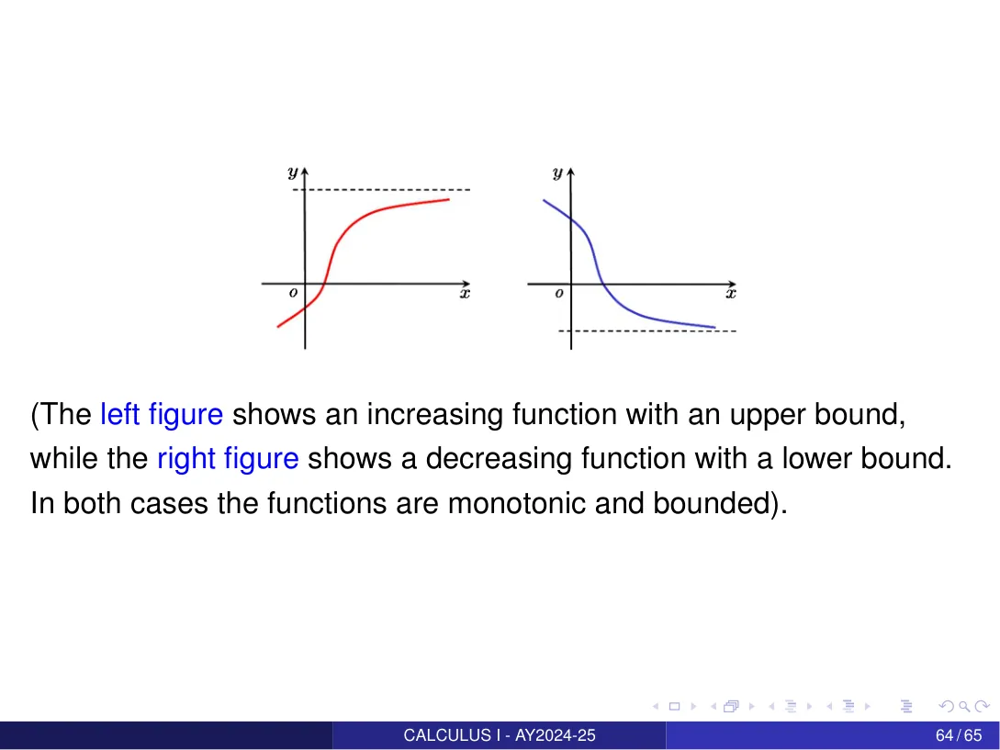
Left: an increasing function with an upper bound; right: a decreasing function with a lower bound. In both cases the function is monotonic and bounded, so it cannot escape: it keeps moving in one direction but is trapped by the bound, so it must settle at a finite limit.
Trái: hàm tăng có cận trên; phải: hàm giảm có cận dưới. Cả hai trường hợp hàm đơn điệu và bị chặn nên nó không thể thoát: nó cứ đi theo một hướng nhưng bị chặn bởi cận, nên phải dừng ở một giới hạn hữu hạn.
End of Chapter 5 · Kết thúc Chương 5
★ Context · Bổ trợ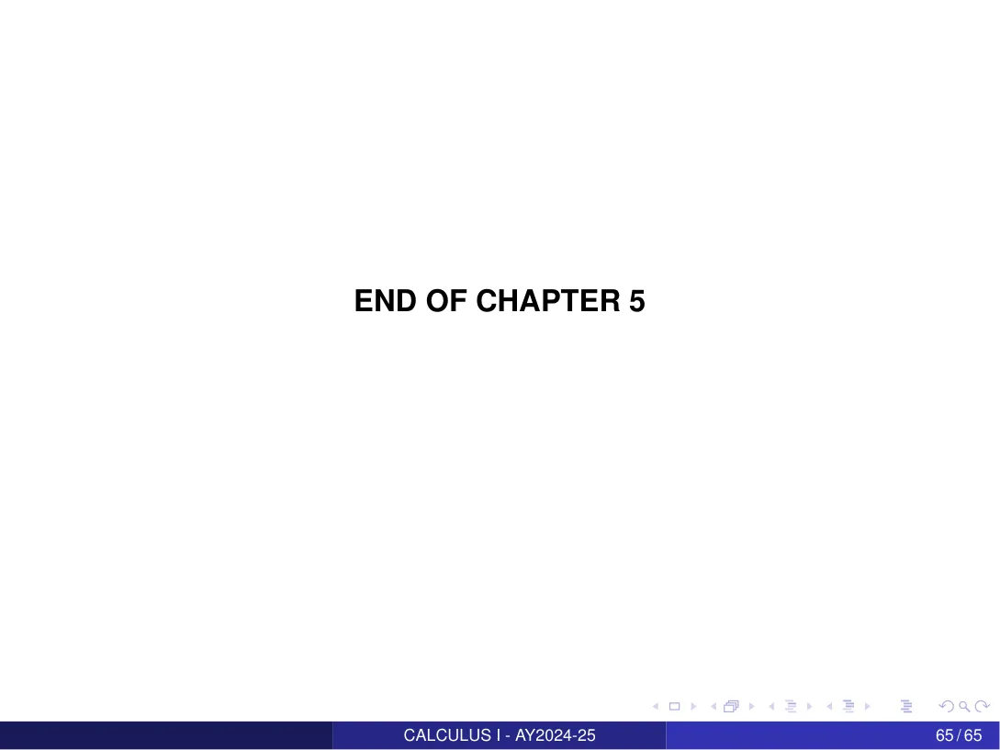
End of Chapter 5. Recap: trigonometric integrals, trigonometric substitutions, partial fractions, improper integrals of Type I and II, the $p$-test, the comparison theorem and the monotonic function theorem.
Kết thúc Chương 5. Tóm tắt: tích phân lượng giác, đổi biến lượng giác, phân thức đơn giản, tích phân suy rộng loại I và II, tiêu chuẩn $p$, định lý so sánh và định lý hàm đơn điệu.